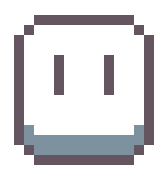

Death grips est ma première expérience faisant
partie du domaine du développement de jeux vidéo, il s'agit d'un plateformer 2D d'une durée de jeu
d'environ 5 à 10 minutes. Ce projet a été réalisé en trio avec la collaboration de
Kamila Medellel et Mathieu
Adamietz. J'ai eu l'occasion de participer à la création du jeu lors d'une option fournie par le but. Cette
option nous proposait de créer, par groupe de 2 ou 3, un jeu vidéo simple et court via Unity sur la
durée d'un semestre à hauteur de 2h par semaine.
Mon rôle était majoritairement de former le gameplay du jeu, c'est à dire tout le code sauf les
menus et transitions. J'ai également créé une tilemap en 8x8, puis je l'ai rééditée en 16x16 :

Créer le gameplay du jeu m'a permis de me faire réflechir réellement pour la première fois au game
design, un aspect qu'aujourd'hui j'adore personnellement. J'ai également pu me familiariser avec le moteur
de jeu Unity et comprendre son fonctionnement. Pour les déplacements du personnage, nous sommes
parti avec 2 sauts et un dash a 8 directions afin de laisser au joueur une grande liberté de mouvement et ne
pas rendre le jeu trop difficile.


Le projet faisant partie d'une AOP, nous avions un temps et des moyens limités. Nous avons donc du revoir nos attentes a la baisse concernant le jeu. Notre premiere idée incluait du combat ainsi que plusieurs mondes. Au final nous avons simplement laissé un monde et seulement du platforming.
RÉSUMÉ DU PROJET :
OUTILS UTILISÉS
 Première utilisation de Unity,
compréhension du moteur de jeu
Première utilisation de Unity,
compréhension du moteur de jeu  Code en C# répondant a une demande
préalable
Code en C# répondant a une demande
préalable -  Création de pixelart pour un
projet et respect d'une charte graphique
 Gérance d'un repository git via la
plateforme Github
Gérance d'un repository git via la
plateforme Github
COMPÉTENCES ACQUISES / AMÉLIORÉES
- Management de projet (temps et repartition des tâches)
- Game design
- Niveau de programmation